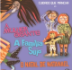

Los Filmes
Producción: LARGOMETRAJES | COPRODUCCIONES | CORTOMETRAJES | DOCUMENTALES
Distribución: LARGOMETRAJES | COLECCION DE CORTOMETRAJES | CORTOMETRAJES
Realización: SERIES PARA LA TV | EPISODIOS PARA LA TV | VIDEOS
Largometrajes producidos por la Casa


|
FELICIDADE É (Felicidad es) |
 BENS CONFISCADOS (Bienes confiscados) |
Cortometrajes Producidos por la Casa


Documentales Producidos por la Casa
 ESTA NÃO É A SUA VIDA (Esta no es tu vida) |
A MATADEIRA (La matadora) |
|
VENTRE LIVRE (Vientre libre) |
Largometrajes Distribuidos por la Casa


Collección de cortos distribuida por la Casa
 CURTAS GAÚCHOS (Cortos gauchos en video) |
CURTAS DA CASA (DVD) |
Cortos Distribuidos por la Casa
 CONTINUIDADE (Continuidad) |
FESTA DE CASAMENTO (Fiesta de casamento) |
|
O ZEPPELIN PASSOU POR AQUI (El Zeppelín pasó por aquí) |
|
|
|
|


Series de TV Realizadas por la Casa
 CENA ABERTA (Escena abierta) |
CONTOS DE INVERNO 2001 (Cuentos de Invierno 2001) |
CONTOS DE INVERNO 2002 (Cuentos de invierno 2002) |
LUNA CALIENTE |
Episodios de TV Realizados por la Casa


|
EM FRENTE DA LEI TEM UM GUARDA (Enfrente de la ley hay un guardia) |
 FRATERNIDADE (Fraternidad) |
 OSCAR BOZ |
 CUIDADO QUE MANCHA (En Portugués) |
||
|
A FAMÍLIA SUJO (En Portugués) |
|